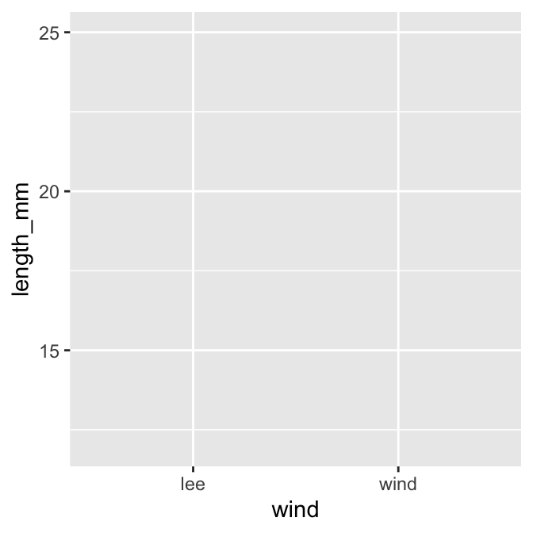
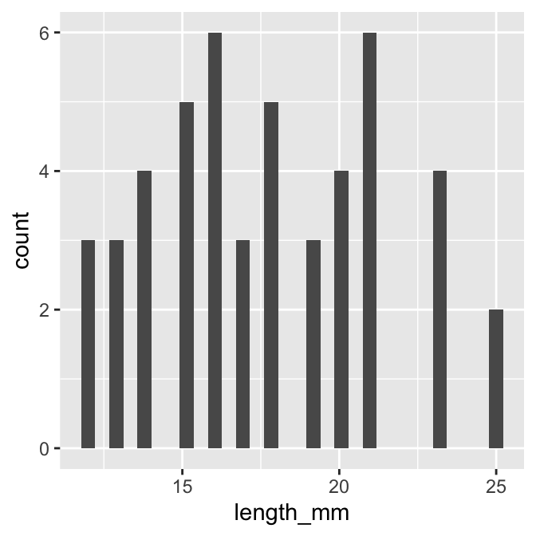
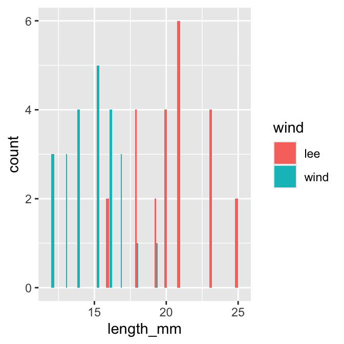
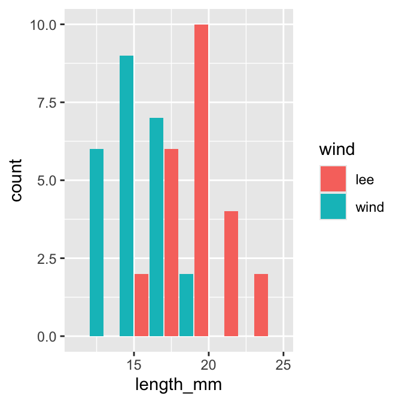

Each script you run from then on you will load the libraries from within the package.
# load this library one time only# library(quarto)# Load the libraries ----library(readxl) # allows to read in excel fileslibrary(tidyverse) # provides utilities seen in console
── Attaching core tidyverse packages ──────────────────────── tidyverse 2.0.0 ──
✔ dplyr 1.2.1 ✔ readr 2.2.0
✔ forcats 1.0.1 ✔ stringr 1.6.0
✔ ggplot2 4.0.3 ✔ tibble 3.3.1
✔ lubridate 1.9.5 ✔ tidyr 1.3.2
✔ purrr 1.2.2
── Conflicts ────────────────────────────────────────── tidyverse_conflicts() ──
✖ dplyr::filter() masks stats::filter()
✖ dplyr::lag() masks stats::lag()
ℹ Use the conflicted package (<http://conflicted.r-lib.org/>) to force all conflicts to become errors
Loading files
Now like we did before with x and y we will do this with a spreadsheet from a CSV file or excel file
#| # load file -----# this file is in the data sub directory# below put cursor between "" and click tab# allows to to select the directory # tab again and select the filep_df <-read_csv("data/pine_needles.csv")
Rows: 48 Columns: 6
── Column specification ────────────────────────────────────────────────────────
Delimiter: ","
chr (4): date, group, n_s, wind
dbl (2): tree_no, length_mm
ℹ Use `spec()` to retrieve the full column specification for this data.
ℹ Specify the column types or set `show_col_types = FALSE` to quiet this message.
# dataframe stored by "<-" reading in csv file in quotes
This will import the excel file
# this will allow you to read in the excel filep_xl_df <-read_excel("data/pine_needles.xlsx")
Visualize data
Use GGPlot to graph the data
the line below loads the dataframe and what the aesthetics are
it does not tell ggplot how to add a layer of the geometry to show the data
Tapestry Plot ——
ggplot(data = p_df, aes(x=wind, y=length_mm))

XY Plot —–
notice the points are layered on top but some overlap
`stat_bin()` using `bins = 30`. Pick better value `binwidth`.

Note we really want to see the histograms colored by wind direction
We can map the wind aesthetic to a fill in the histogram
Histogram Colors —–
ggplot(data = p_df, aes(x=length_mm, fill = wind)) +geom_histogram( position =position_dodge2(width =0.5))
`stat_bin()` using `bins = 30`. Pick better value `binwidth`.

Histogram Bins —–
ggplot(data = p_df, aes(x=length_mm, fill = wind)) +geom_histogram( binwidth =2, # sets the width in units of the bins - try different nubmersposition =position_dodge2(width =0.5))

Other Plots if time in class
Box and Whisker Plots
ggplot(data = p_df, aes(x=wind, y=length_mm, fill = wind)) +geom_boxplot()